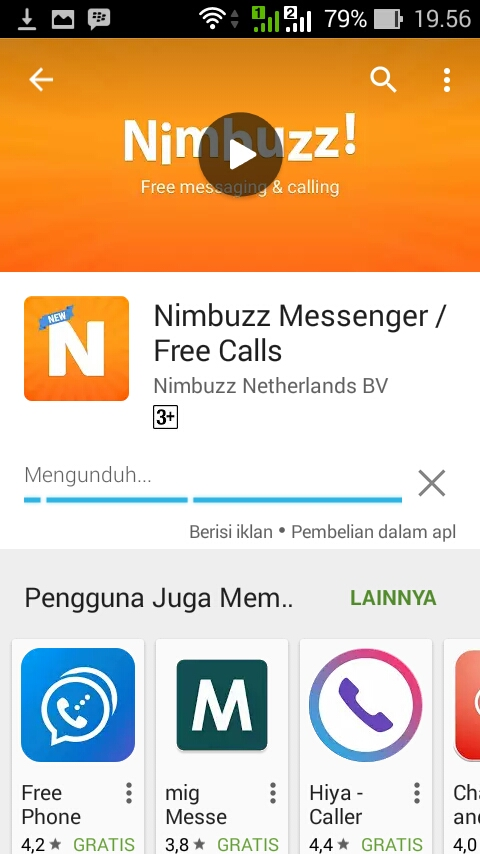
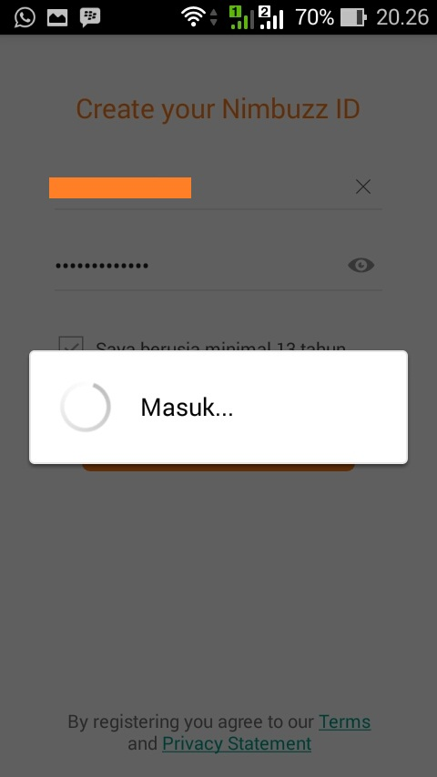

Setting Nimbuzz di OtomaX
Nimbuzz...? pernahkah Anda mendengar nama tersebut?... Nimbuzz merupakan layanan chat yang telah lama malang melintang di dunia digital, ia menggunakan protokol XMPP sehingga dapat dipasang di OtomaX sebagai layanan chat. Oleh karena itu Anda dapat menggunakan Nimbuzz untuk Host to Host ke server lain.
Pertanyaan yang muncul dibenak Anda: bagaimana mendaftar akun Nimbuzz?, bagaimana setting di OtomaX?... Naah... beruntung sekali Anda sedang berada di tempat yang tempat. Disini kami akan membahas hal itu:
-
Ambil HP Android Anda dan buka aplikasi Play Store, kemudian pada box pencarian tulis: nimbuzz. Selanjutnya klik aplikasi Nimbuzz Messenger
-
Klik tombol Pasang
-
Klik tombol Terima
-
Tunggu aplikasi Nimbuzz untuk HP Android terdownload hingga selesai dan terinstall

-
Klik tombol Buat Akun
-
Akan muncul tampilan seperti di bawah ini dan lakukan sesuai petunjuk yang ada:
-
Klik tombol Lewati
-
Akan muncul form pendaftaran Akun Nimbuzz dan lakukan sesuai petunjuk yang ada di gambar di bawah ini:
Jika pendaftaran berhasil, Akun Nimbuzz Anda ialah your_id@nimbuzz.com, ini yang nanti akan dimasukkan di OtomaX
Akan muncul tampilan seperti gambar di bawah ini, pertanda pendaftaran Anda berhasil


-
Sekarang pindah ke OtomaX, Tambah modul IM Center, Isi label sesuai keinginan Anda, Type pilih Gtalk/XMPP/Jabber dan masukkan Akun dan Password Nimbuzz Anda, selengkapnya klik disini. Perhatikan gambar berikut:
-
Sekarang aktifkan Modul IM Center Nimbuzz Anda
- Berhasil... selesai